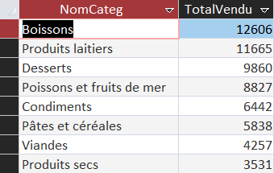
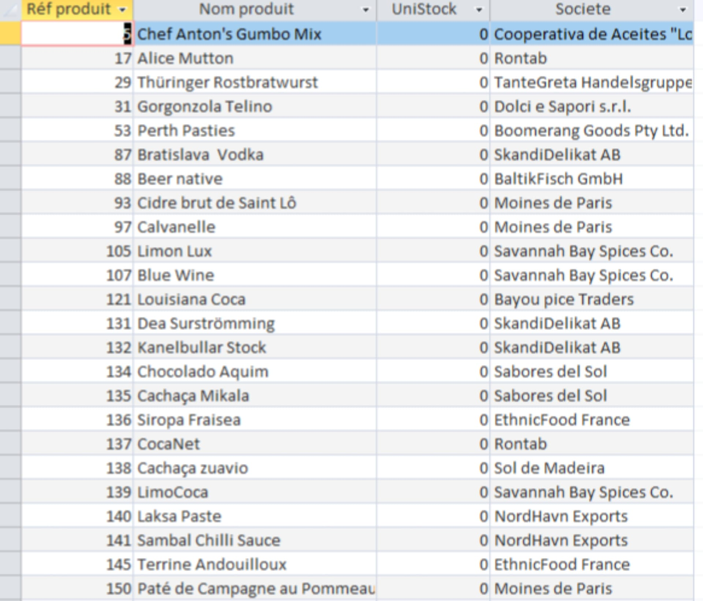
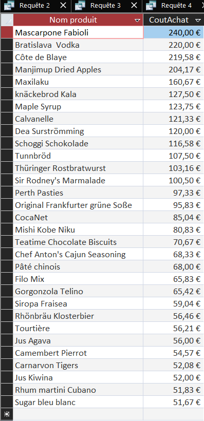

Requête/indicateur personnel de Lisa :
Afficher les totaux de ventes (en quantité) par catégorie, classés du plus vendu au moins vendu
Ca permet à KDou d'optimiser son offre commerciale en identifiant les catégories les plus vendues (comme les Boissons et Produits laitiers) et celles qui le sont le moins. Cela aide à réduire le gaspillage, à rationaliser le stockage et à privilégier des réapprovisionnements écoresponsables sur les meilleures ventes.
On selectionne le nom de la catégorie. On utilise la fonction "SUM" pour faire la somme des quantités vendues par catégorie, qu'on nomme "TotalVendu" grâce à "AS". Ensuite on relie les tables "Catégorie" et "Produit" par le clé commune "CodeCateg", et "Produit" et "DetailCommande" par la clé commune "RefProd". On utilise "GROUP BY" pour regrouper tous les articles vendus avec leur catégorie respectives avant de calculer la somme totale des quantité. Enfin, on utilise "ORDER BY" pour trier les résultats par ordre décroissant.

Requête/indicateur personnel de Dwiti :
Afficher les produits qui sont en rupture de stock
Permet à KDOU de repérer rapidement les produits qui ne sont plus disponibles en stock et d'indentifier leurs fournisseurs.
Cette requête relie les tables "Produit" et "Fournisseur" afin d'afficher les produits dont le stock est égal à zéro, ainsi que leurs références, leurs noms et leurs fournisseurs. La condition "WHERE" permet de sélectionner uniquement les produits en rupture de stock.

Requête/indicateur personnel de Naëlla :
Afficher la liste des produits d'épicerie fine dont le coût d'achat est supérieur à 50 €, avec leur nom et leur coût d'achat, du plus cher au moins cher
Intérêt de Kdou: Permet d'identifier les articles à forte valeur marchande pour cibler une clientèle premium, ajuster la marge commerciale ou surveiller les coûts d'approvisionnement.
On sélectionne le nom du produit ("NomProd") et son coût d'achat ("CoutAchat"). On va chercher ces informations dans la table "Produit". On utilise la condition "WHERE" pour filtrer et ne garder que les produits dont le coût d'achat est supérieur à 50 euros. Enfin, on utilise "ORDER BY" pour trier les résultats par ordre décroissant en fonction du coût d'achat.
